Global Tech Think Tank Watch
国际科技智库周报
本周态势
本周形成 17 条 P0/P1 重点，议题集中在AI、数字基础设施与技术治理、产业链、制造与能源基础设施。产业链、制造与能源信号 7 条；AI 与数字基础设施信号 7 条；直接涉华条目 1 条。
本周必读
- 人工智能加速时代的关键基础设施软件加固研判 RAND判断先进模型发现漏洞的速度已可能超过全球防御者修补速度，Anthropic Project Glasswing和OpenAI Daybreak被用作能力跃迁的现实案例。证据 Y2K、HTTPS迁移和内存安全语言推广说明，大规模技术转型需要标准、采购、激励和多方协调共同塑造“阻力最小”的升级路径。
- 量子技术的未来与美国竞争力研判 材料以量子计算、量子通信和量子传感三类能力为对象，判断其长期价值同时涉及经济竞争力和国家安全。证据 Hoover对产业前景持审慎乐观态度，认为量子计算可能服务药物研发、食品生产和超导研究，但距离实用化仍需解决硬件、纠错和专用算法等基础障碍。
- 印太四国军队采用AI决策支持应借鉴北约研判 文章讨论澳大利亚、日本、韩国和新西兰如何把人工智能决策支持系统纳入联合作战，主张以北约Maven系统的快速部署为学习样本。证据 Australian Strategic Policy Institute对AI辅助持明确支持态度，认为其能整合多源数据、处理语言与格式差异、发现人工生成材料中的错误，并减轻联盟目标选择和规则协调负担。
- 走向更现实的欧中产业政策辩论研判 文章针对欧洲关于“第二次中国冲击”的产业政策讨论，反对以全面保护和经济战替代竞争力改革。证据 ECIPE认为中国在电动车、光伏等部门的优势不能简单归因于精准补贴，企业家扩张、规模化制造、成本下降和激烈竞争同样解释了创新与市场份额变化。
- 留住科研人才决定美国竞争优势研判 ITIF反对由政治任命者扩大对科研资助选择的控制，援引约16.8万份意见中96%反对相关规则，主张继续以同行评议和科学价值配置经费。证据 对916名青年生物医学科学家的调查显示，其留美意愿在联邦科研经费变化后下降21个百分点，外国科学家降幅达到30.8个百分点。
议题观点速览
AI、数字基础设施与技术治理（2 条）
- RAND：RAND判断先进模型发现漏洞的速度已可能超过全球防御者修补速度，Anthropic Project Glasswing和OpenAI Daybreak被用作能力跃迁的现实案例。
- RAND：报告判断现有企业安全流程足以支撑多数控制，前沿实验室可在6至12个月内分阶段落地，无需先建立全新的制度体系。
产业链、制造与能源基础设施（2 条）
- Hoover Technology Policy Accelerator：材料以量子计算、量子通信和量子传感三类能力为对象，判断其长期价值同时涉及经济竞争力和国家安全。
- RAND：文章讨论美国电气化和数据中心扩张推动的新一轮电力基础设施建设，认为建设速度与可负担性受制于项目级成本数据缺口。
科研体系、人才与创新政策（2 条）
- Information Technology and Innovation Foundation：ITIF反对由政治任命者扩大对科研资助选择的控制，援引约16.8万份意见中96%反对相关规则，主张继续以同行评议和科学价值配置经费。
- Center for Strategic and International Studies：Center for Strategic and International Studies反对把专利和强制许可视为主要瓶颈，认为疫情中的关键障碍更多来自资源不足、供应链中断、出口限制、监管延...
涉华科技竞争与上海参考（1 条）
- European Centre for International Political Economy：文章针对欧洲关于“第二次中国冲击”的产业政策讨论，反对以全面保护和经济战替代竞争力改革。
本期目录
- P0主题 01｜人工智能加速时代的关键基础设施软件加固
- P0主题 02｜量子技术的未来与美国竞争力
- P0主题 03｜实现人工智能模型权重三级安全
- P0主题 04｜人工智能替代劳动后的联邦财政收入
- P1主题 05｜印太四国军队采用AI决策支持应借鉴北约
- P1主题 06｜走向更现实的欧中产业政策辩论
- P1主题 07｜建立科罗拉多州应用人工智能劳动力计划
- P1主题 08｜留住科研人才决定美国竞争优势
- P1主题 09｜加快新建电厂依赖更透明的成本数据
- P1主题 10｜美国光伏组件强制回收政策的依据评估
- P1主题 11｜新冠疫情对全球卫生创新与药品可及性的启示
- P1主题 12｜扩大联邦选择性病原体计划监管核酸的法律空间
- P1主题 13｜扩大危险核酸监管的收益、负担与实施路径
- P1主题 14｜乌克兰冬季关键基础设施防护竞赛
- P1主题 15｜转让“风暴阴影”制造技术的实际效用有限
- P1主题 16｜美越关键矿产合作的未竟议程
- P1主题 17｜数据中心为何成为2026年美国中期选举焦点
人工智能加速时代的关键基础设施软件加固
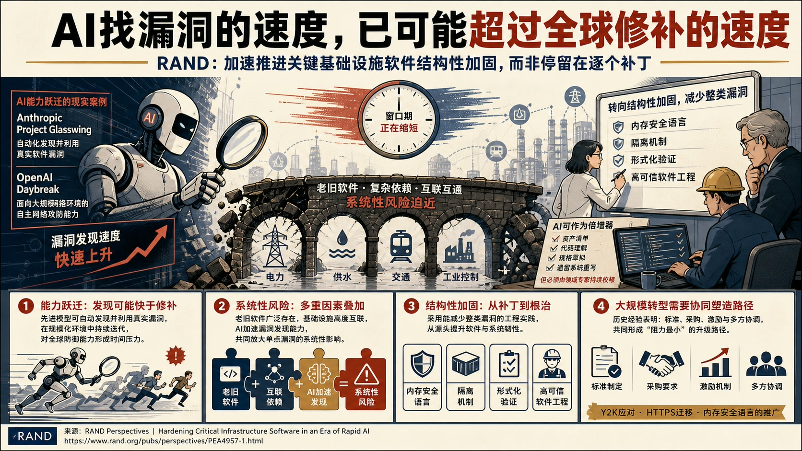
RAND判断先进模型发现漏洞的速度已可能超过全球防御者修补速度，Anthropic Project Glasswing和OpenAI Daybreak被用作能力跃迁的现实案例。
人工智能加速时代的关键基础设施软件加固
论证与政策含义
- 报告把老旧软件、基础设施互联依赖和AI加速漏洞发现的叠加视为迫近的系统性风险。
- 报告反对把防御停留在逐个补丁层面，主张转向能够减少整类漏洞的结构性加固，包括内存安全语言、隔离机制、形式化验证和高可信软件工程。
- AI也可用于资产清单、代码理解、规格草拟和遗留系统重写，但必须由领域专家持续校核，避免自动化防御产生新的盲点。
- Y2K、HTTPS迁移和内存安全语言推广说明，大规模技术转型需要标准、采购、激励和多方协调共同塑造“阻力最小”的升级路径。
政策建议
RAND建议基础设施运营者先以AI辅助建立软件资产清单和代码结构认知，再逐步采用隔离、内存安全语言与形式化验证；政府应通过采购要求、标准和激励协调跨行业迁移，研究界则需继续降低高可信软件工程的实施成本。量子技术的未来与美国竞争力
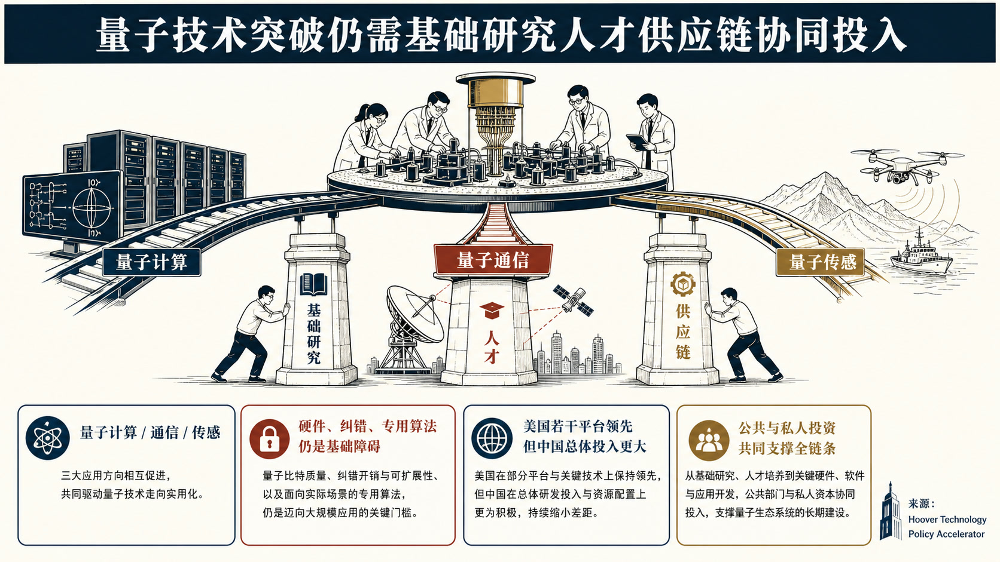
材料以量子计算、量子通信和量子传感三类能力为对象，判断其长期价值同时涉及经济竞争力和国家安全。
量子技术的未来与美国竞争力
论证与政策含义
- Hoover对产业前景持审慎乐观态度，认为量子计算可能服务药物研发、食品生产和超导研究，但距离实用化仍需解决硬件、纠错和专用算法等基础障碍。
- 美国在若干先进量子平台上保持领先，中国的总体投入规模则更大，竞争优势并不稳固。
- 材料把基础研究、全球人才、供应链安全和成果转化生态视为相互依赖的政策条件，反对将量子竞争收窄为单一设备或短期商业化竞赛。
- Hoover Technology Policy Accelerator判断，，只有持续的公共与私人投资共同支撑从理论突破到现实应用的全链条，美国现有领先地位才可能延续。
政策建议
材料明确主张持续资助基础研究、吸引和培养量子人才、加固关键供应链，并通过公共与私人部门的战略性投资衔接科研突破与实际应用。实现人工智能模型权重三级安全
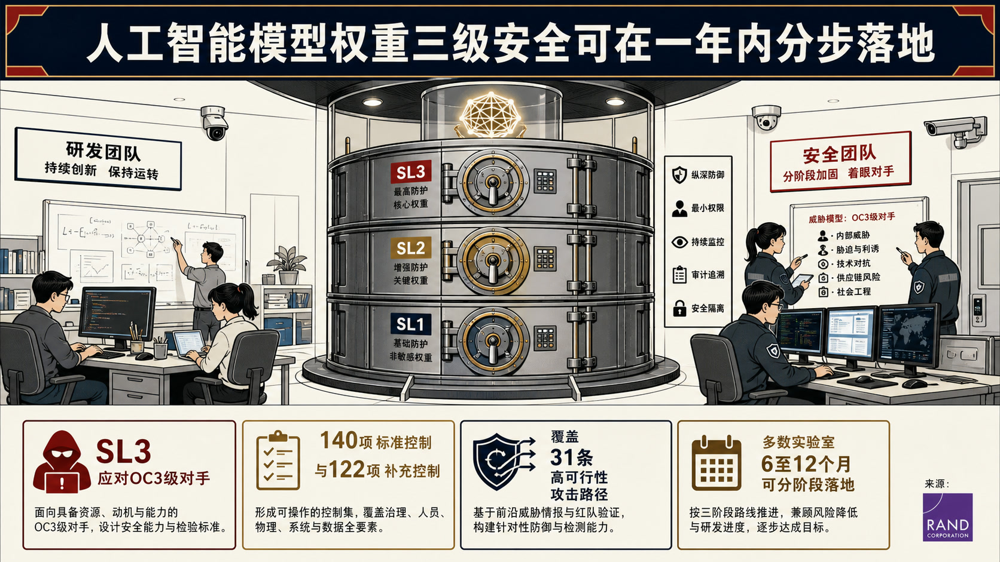
报告判断现有企业安全流程足以支撑多数控制，前沿实验室可在6至12个月内分阶段落地，无需先建立全新的制度体系。
实现人工智能模型权重三级安全
论证与政策含义
- 报告为前沿人工智能模型权重提出可审计的三级安全标准（SL3），目标威胁是有组织网络犯罪集团和内部人员等OC3级对手。
- RAND从NIST SP 800-53中组织出140项标准控制和122项补充控制，覆盖31条高可行性攻击路径，并通过威胁—控制多对多映射形成纵深防御。
- 参与访谈的前沿实验室和政府代表把内部威胁、胁迫等人力情报风险列为首要担忧，而实施障碍主要来自资源配置、跨部门协同及安全与研发速度的权衡。
- SL3被定位为通向更高安全等级的基础台阶，并需随威胁与防护技术演进定期更新。
人工智能替代劳动后的联邦财政收入
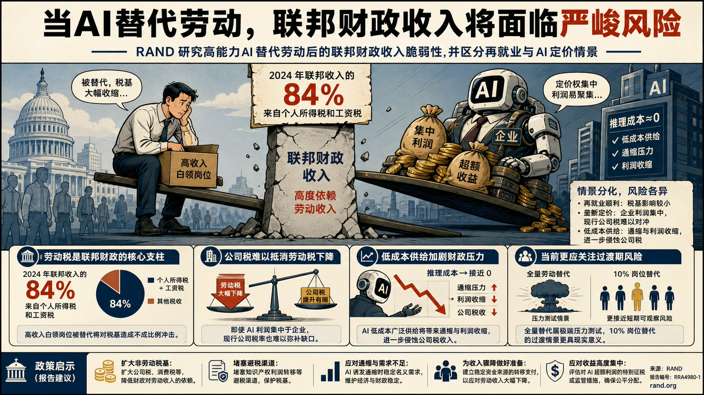
RAND研究高能力人工智能替代劳动后美国联邦财政收入的脆弱性，并区分劳动者能否再就业、AI由垄断者定价还是接近推理成本供应等情景。
人工智能替代劳动后的联邦财政收入
论证与政策含义
- RAND指出，2024年联邦收入的84%来自个人所得税和工资税，高收入白领岗位被替代会对税基造成不成比例的冲击。
- 即使AI利润集中于企业，现行公司税率也难以抵消劳动税收下降；若AI以低成本广泛供给，通缩与利润收缩还会进一步侵蚀公司税。
- 报告同时承认全量劳动替代属于压力测试，10%岗位替代的过渡情景更接近可观察的短期风险。
- 其政策立场是应提前降低财政对劳动收入的依赖，并为通缩、收入支持和AI超额利润集中准备工具。
政策建议
RAND建议扩大公司税和消费税等非劳动税基、堵塞知识产权利润转移等避税渠道；在AI诱发通缩时稳定名义需求，并为劳动收入骤降准备具有稳定资金来源的转移支付；若AI收益高度集中，还可评估特别征税或监管措施。印太四国军队采用AI决策支持应借鉴北约
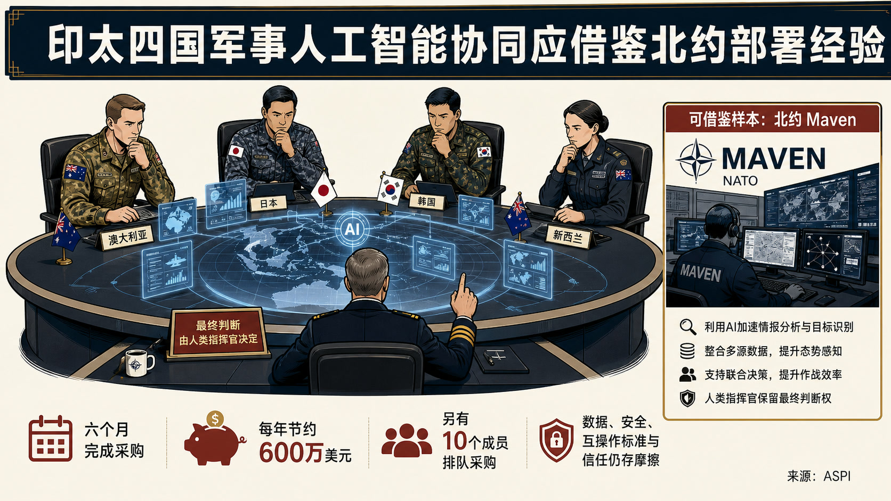
文章讨论澳大利亚、日本、韩国和新西兰如何把人工智能决策支持系统纳入联合作战，主张以北约Maven系统的快速部署为学习样本。
印太四国军队采用AI决策支持应借鉴北约
论证与政策含义
- Australian Strategic Policy Institute对AI辅助持明确支持态度，认为其能整合多源数据、处理语言与格式差异、发现人工生成材料中的错误，并减轻联盟目标选择和规则协调负担。
- 北约从提出需求到采购Maven仅用六个月，系统投入训练后据称每年节约600万美元，另有10个成员排队采购，这被视为制度吸收能力的证据。
- 文章同时强调AI用于增强人的判断，并未主张把目标决策完全交给自动系统。
- 印太四国在数据、安全和互操作标准以及对技术的信任程度上存在差异，推广过程仍会遭遇与AUKUS类似的摩擦。
走向更现实的欧中产业政策辩论
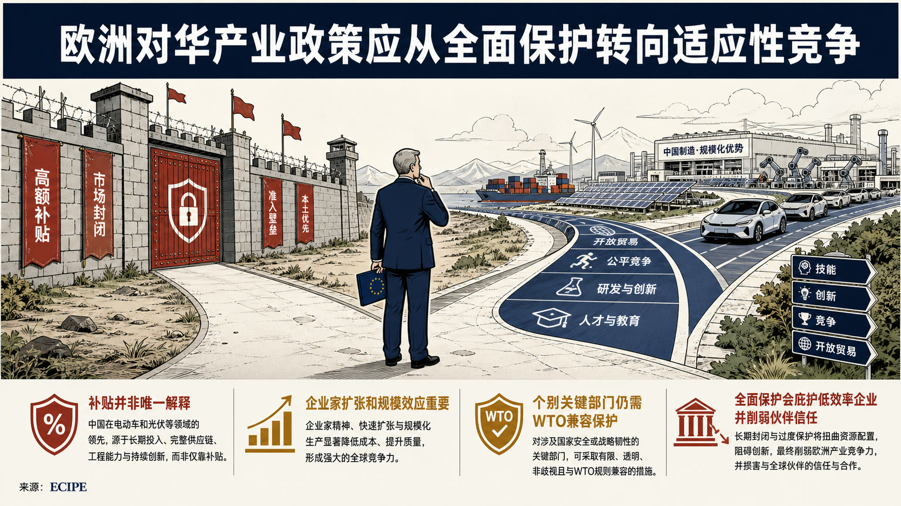
文章针对欧洲关于“第二次中国冲击”的产业政策讨论，反对以全面保护和经济战替代竞争力改革。
走向更现实的欧中产业政策辩论
论证与政策含义
- ECIPE认为中国在电动车、光伏等部门的优势不能简单归因于精准补贴，企业家扩张、规模化制造、成本下降和激烈竞争同样解释了创新与市场份额变化。
- European Centre for International Political Economy批评欧洲把产业失利一概解释为不公平竞争，这种叙事会保护低效率既有企业，并削弱与印度、巴西等伙伴形成联盟的可信度。
- 文章同时承认中国对俄关系、人权、台湾和稀土出口管制构成真实安全问题，个别关键部门仍可能需要符合WTO规则的保护和供应链强化。
- 其政策取向是以适应性取代普遍自给，选择少数真正需要国家干预的部门，同时通过技能、创新、竞争和开放贸易帮助企业与劳动者转型。
政策建议
文章建议欧盟限制国家干预的范围，以WTO兼容工具应对真正危机，同时强化供应链、支持劳动者转型并保持比较优势和企业主导的开放竞争。中国 / 上海参考
文章直接比较中国在电动车、光伏、航空和稀土等产业的表现，提醒评估中国产业竞争力时区分补贴、企业家能力、规模效应和成本优势，避免把所有市场份额变化归结为单一政策工具。建立科罗拉多州应用人工智能劳动力计划
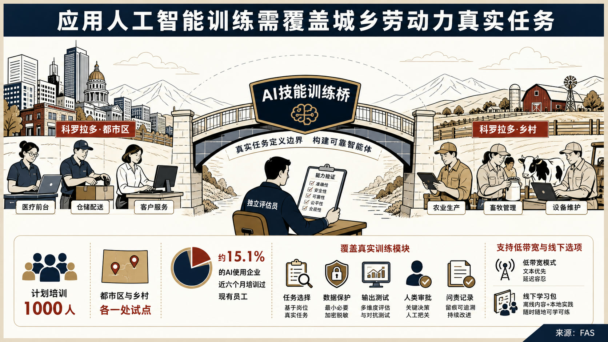
提案针对人工智能在职场快速普及而应用训练不足的问题，主张建立覆盖求职者、小型机构员工和地方公务人员的州级技能计划。
建立科罗拉多州应用人工智能劳动力计划
论证与政策含义
- FAS指出，2026年第二季度52%的美国雇员已在工作中使用AI，但科罗拉多使用AI的企业中仅约15.1%在过去六个月培训过现有员工，获得模型账号不能替代岗位能力。
- 拟议试点将在一个都市区和一个乡村地区培训1000人，每名学员需围绕真实或仿真的工作任务构建一个边界明确的智能体，并接受独立能力评估。
- 训练内容包括任务选择、数据保护、输出测试、人类审批、适用边界说明和问责记录，以回应2027年生效的自动决策文档义务。
- 报告特别强调宽带不足和城乡可及性，建议依托劳动力中心、学院和图书馆提供低带宽及线下选项。
政策建议
提案建议州长责成劳工部门在90天内制定训练标准、资格条件、数据保护和评估规则，并由州政府掌握标准、采购与合规，同时联合企业、地方政府、学院、图书馆和乡村伙伴实施两地试点。留住科研人才决定美国竞争优势
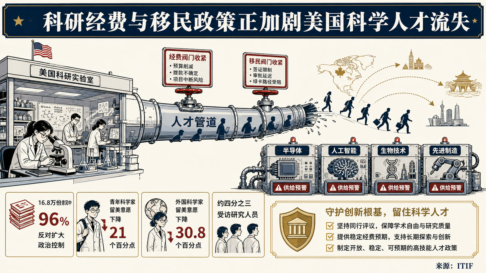
ITIF反对由政治任命者扩大对科研资助选择的控制，援引约16.8万份意见中96%反对相关规则，主张继续以同行评议和科学价值配置经费。
留住科研人才决定美国竞争优势
论证与政策含义
- 文章把科研人才视为半导体、人工智能、生物技术和先进制造竞争力的上游基础，警告美国科研与移民政策正在削弱这一优势。
- 对916名青年生物医学科学家的调查显示，其留美意愿在联邦科研经费变化后下降21个百分点，外国科学家降幅达到30.8个百分点。
- Nature对1600多名研究人员的调查中约四分之三考虑离美，另有NIH资助研究者调查显示13%的实验室已因经费中断流失人员，说明风险不限于单一学科。
- Information Technology and Innovation Foundation认为中国等竞争者正主动吸收这些人才，美国的政策不确定性会把本国投入培养的知识资本外溢给对手。
政策建议
文章建议撤回削弱同行评议的资助规则，恢复联邦科学机构的稳定预期，并避免对科研机构和高技能人才施加不必要的H-1B高额费用。加快新建电厂依赖更透明的成本数据
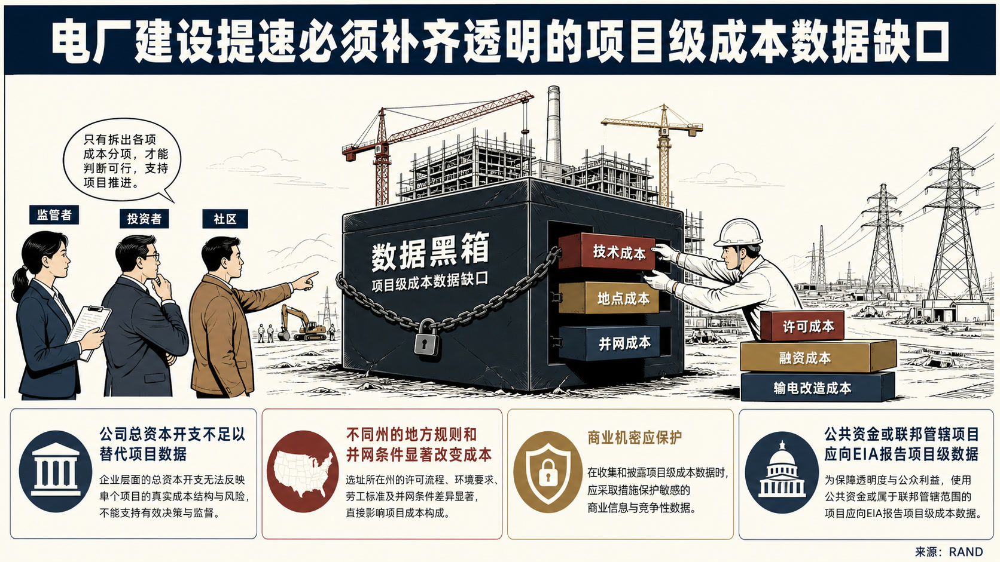
文章讨论美国电气化和数据中心扩张推动的新一轮电力基础设施建设，认为建设速度与可负担性受制于项目级成本数据缺口。
加快新建电厂依赖更透明的成本数据
论证与政策含义
- RAND指出，公用事业披露多为公司总资本开支，政府和实验室数据常按州或地区汇总，商业数据库也大量以装机容量乘平均单价代替真实成本。
- 缺少技术、地点、并网、许可、融资和输电改造等成本分项，使监管者无法识别可避免的延误，投资者难以定价风险，社区也无法判断承接项目的收益。
- 文章以得州与加州、马萨诸塞州的成本和许可差异说明，地方规则与劳动力、并网条件会显著改变风电、光伏、核电或燃气项目的实际资本成本。
- RAND承认企业有保护商业敏感信息的正当理由，但认为目前接近“数据黑箱”的状态本身会抬高全社会建设成本。
政策建议
文章建议国会和联邦机构要求接受公共资金或处于联邦管辖的能源项目按项目、技术、地点和主要成本类别报告资本成本，由美国能源信息署集中公开，同时保护确属商业机密的细节。美国光伏组件强制回收政策的依据评估
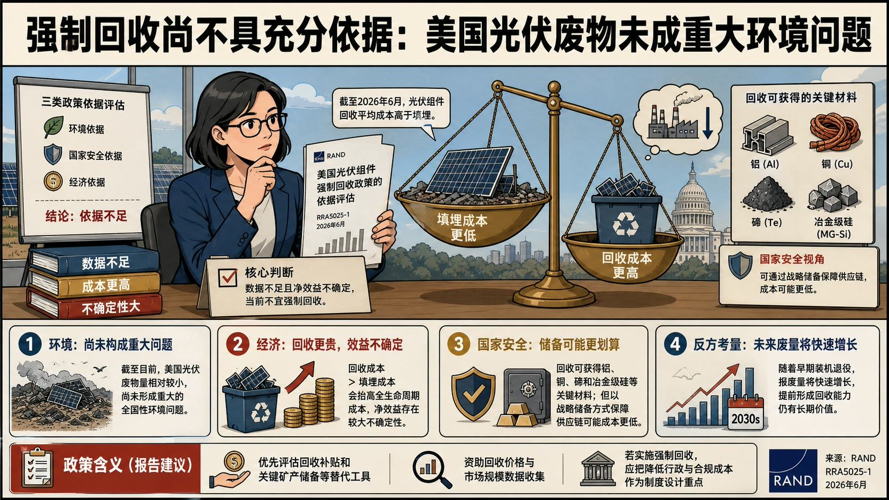
RAND认为美国光伏废物尚未构成重大的全国性环境问题，现有数据不足也使不同政策情景的净效益存在较大不确定性。
美国光伏组件强制回收政策的依据评估
论证与政策含义
- RAND评估美国是否应强制回收报废光伏组件，并分别检验环境、国家安全和经济三类政策依据。
- RAND的结论偏审慎：截至2026年6月，光伏组件回收平均成本高于填埋，强制回收会抬高全生命周期成本，并可能通过轻微压低光伏装机带来额外温室气体排放。
- 回收确实能获得铝、铜、碲和冶金级硅等关键材料，但以战略储备方式保障供应链可能成本更低。
- 其反方考量是，报废量将随早期装机退役快速增长，提前形成回收能力仍有长期价值。
政策建议
RAND建议优先评估回收补贴和关键矿产储备等替代工具，资助回收价格与市场规模数据收集；若仍实施强制回收，应把降低行政与合规成本列为制度设计重点。新冠疫情对全球卫生创新与药品可及性的启示
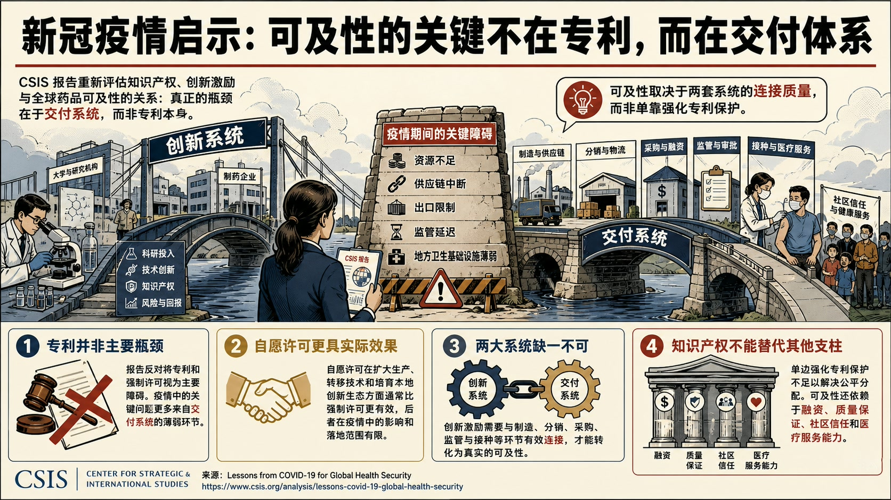
Center for Strategic and International Studies反对把专利和强制许可视为主要瓶颈，认为疫情中的关键障碍更多来自资源不足、供应链中断、出口限制、监管延迟和地方卫生基础设施薄弱。
新冠疫情对全球卫生创新与药品可及性的启示
论证与政策含义
- 报告以新冠疫苗和治疗药物为案例，重新评估知识产权、创新激励与全球药品可及性之间的关系。
- 其分析框架把科研投资与知识产权构成的创新系统，同制造、分销、采购、监管和接种构成的交付系统并置，强调可及性取决于两套系统的连接质量。
- Center for Strategic and International Studies认为自愿许可在扩大生产、转移技术和培育本地创新生态方面通常比强制许可更具实际效果，后者在疫情中的落地范围和影响有限。
- 报告同时承认知识产权安排不能替代融资、质量保证、社区信任和医疗服务能力，单边强化专利保护也不足以解决公平分配。
政策建议
Center for Strategic and International Studies建议优先改善自愿许可、监管互认、采购融资、供应链和本地制造能力之间的衔接，并把医疗基础设施、质量保证和公众信任纳入下一次疫情的技术可及性准备。扩大联邦选择性病原体计划监管核酸的法律空间
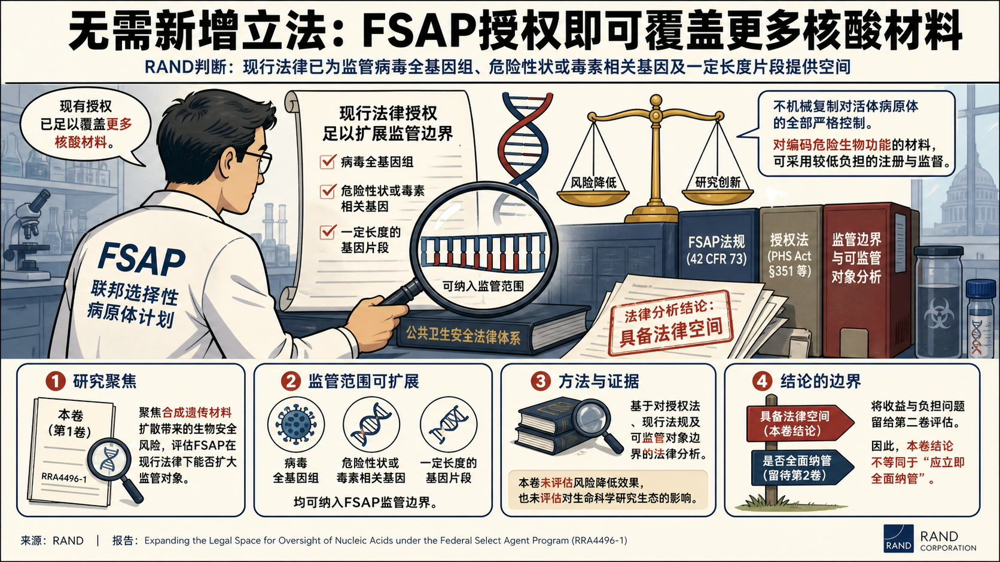
RAND判断，无需新增立法，FSAP的授权即可覆盖更多病毒全基因组、危险性状或毒素相关基因，以及一定长度的基因片段。
扩大联邦选择性病原体计划监管核酸的法律空间
论证与政策含义
- 报告第一卷聚焦合成遗传材料扩散带来的生物安全风险，审查美国联邦选择性病原体计划（FSAP）能否在现行法律下扩大监管对象。
- RAND同时反对把活体病原体的全部严格控制机械复制到核酸材料，认为可针对编码危险生物功能的材料采用较低负担的注册和监督方式。
- 报告的证据主要是对授权法、现行法规和可监管对象边界的法律分析，本卷并未完整评估风险降低效果或对生命科学研究生态的影响。
- RAND明确把这些收益与负担问题留给第二卷，因而本卷结论属于“具备法律空间”，并不等同于“应立即全面纳管”。
扩大危险核酸监管的收益、负担与实施路径
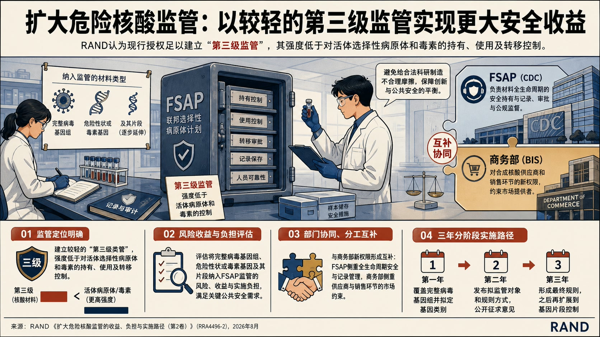
RAND认为现行授权足以建立较轻的“第三级监管”，其强度低于对活体选择性病原体和毒素的持有、使用及转移控制。
扩大危险核酸监管的收益、负担与实施路径
论证与政策含义
- 报告第二卷评估把危险病毒基因组、危险性状或毒素基因及其片段纳入FSAP监管的风险收益和实施负担。
- 该框架可与商务部对合成核酸供应商和销售环节的新权限形成互补：疾控部门负责材料全生命周期的安全持有与记录，商务部更适合约束市场提供者。
- RAND明确要求避免给合法科研制造不合理摩擦，因而主张分阶段确定对象、公开征求利益相关方意见，并逐步延伸到基因片段。
- 实施路径按三年推进：第一年覆盖完整病毒基因组并拟定基因类别，第二年发布拟监管对象和规则方式，第三年形成最终规则，之后再扩展片段控制。
乌克兰冬季关键基础设施防护竞赛
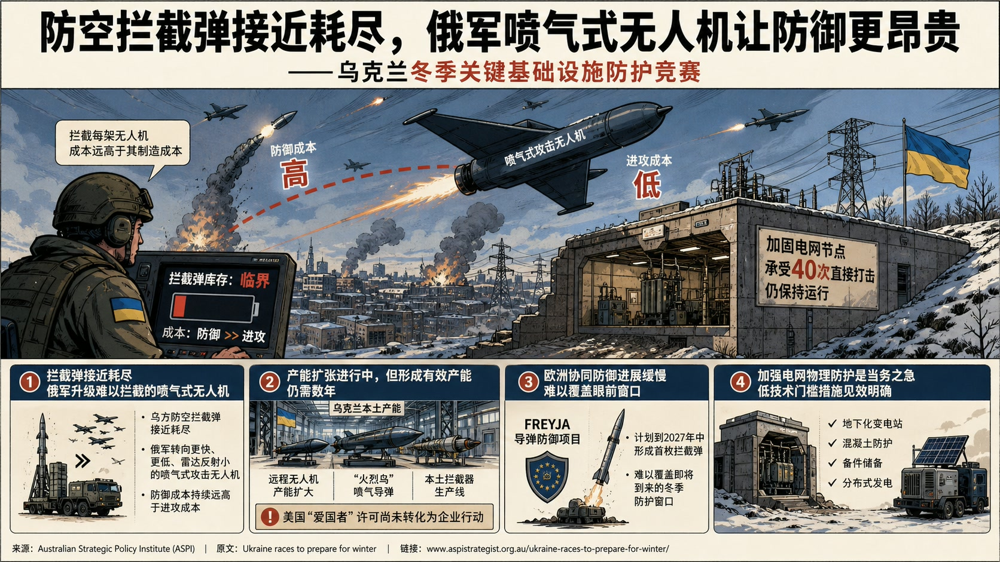
Australian Strategic Policy Institute判断乌方防空拦截弹接近耗尽，而俄方转向更难拦截的喷气式攻击无人机，使防御成本持续高于进攻成本。
乌克兰冬季关键基础设施防护竞赛
论证与政策含义
- 文章把乌克兰冬季韧性界定为空中拦截能力、导弹与无人机产能、欧洲协同防御及电网物理加固之间的综合竞赛。
- 乌克兰虽扩大远程无人机、“火烈鸟”喷气导弹和本土拦截器生产，但美国“爱国者”许可尚未转化为企业行动，形成有效产能仍可能需要数年。
- 拟议的欧洲Freyja导弹防御项目计划到2027年中形成首枚拦截弹，同样难以覆盖眼前窗口。
- 文章引用部分加固电网节点承受40次直接打击仍运行的案例，支持地下化变电站、混凝土防护、备件储备和分布式发电等较低技术门槛措施。
转让“风暴阴影”制造技术的实际效用有限
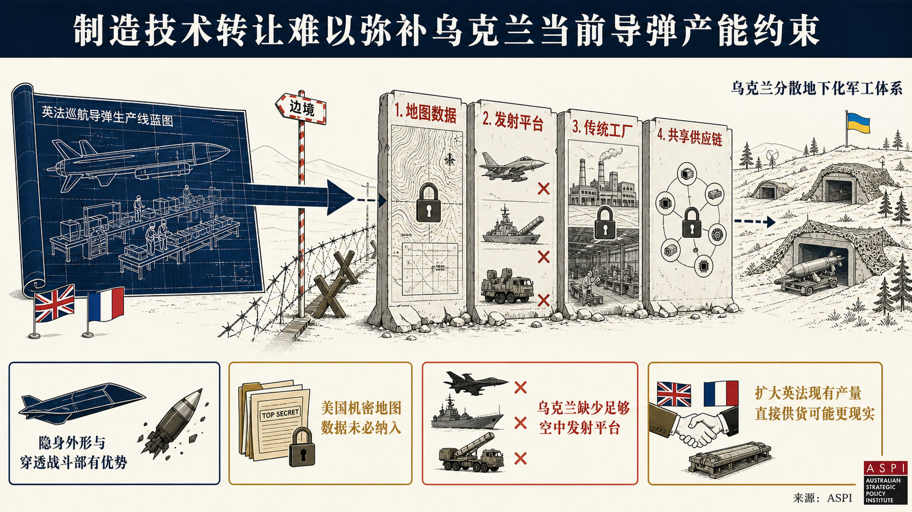
Australian Strategic Policy Institute评估英法向乌克兰转让“风暴阴影/斯卡普”巡航导弹制造知识的实际价值，并对这一安排持明显怀疑态度。
转让“风暴阴影”制造技术的实际效用有限
论证与政策含义
- Australian Strategic Policy Institute认为该导弹的隐身外形和穿透战斗部具有优势，但低空导航所需的美国机密地图数据未必包含在技术转让中，乌克兰也缺少足够的空中发射平台。
- 其传统工厂和共享供应链式生产体系与乌克兰分散、地下化的军工体系并不匹配，建立稳定产线的难度可能高于政治声明所呈现的程度。
- 乌克兰现有地面发射“火烈鸟”导弹和低成本远程无人机在射程、产能适配和作战使用上具有不同优势，单纯复制英法产品未必是最优资源配置。
- Australian Strategic Policy Institute因此主张英法优先扩大本国现有产量直接供货，并把美国是否许可乌克兰生产“爱国者”拦截弹视为更紧迫的制造能力问题。
美越关键矿产合作的未竟议程
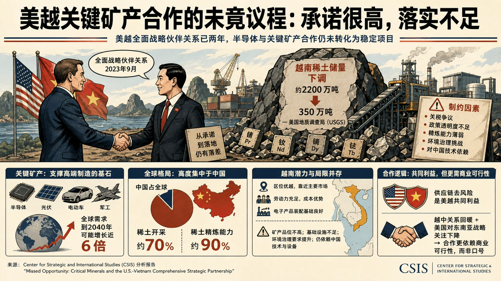
Center for Strategic and International Studies评估2023年美越全面战略伙伴关系中半导体和关键矿产合作的执行落差，判断高层承诺尚未转化为稳定项目。
美越关键矿产合作的未竟议程
论证与政策含义
- 美国地质调查局把越南稀土储量估计从约2200万吨下调至350万吨，关税争议、政策透明度不足和精炼能力薄弱进一步削弱了合作基础。
- Center for Strategic and International Studies强调关键矿产支撑半导体、光伏、电动车和军工制造，全球需求到2040年可能增长近六倍，而中国约占全球70%的稀土开采和90%的精炼能力。
- 越南具备区位、劳动力和电子装配基础，但矿产质量、基础设施、环境治理和对中国技术的依赖限制其成为替代供应者。
- 美越双方虽有供应链去风险的共同利益，越中关系回暖和美国对东南亚战略关注下降，使合作逻辑更依赖商业可行性而非地缘政治口号。
数据中心为何成为2026年美国中期选举焦点
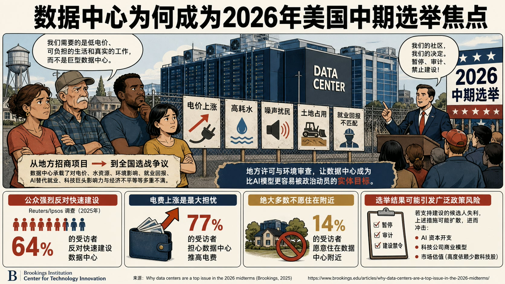
Brookings指出，公众反对集中在电价、水耗、噪声、土地占用和就业回报不匹配，Reuters/Ipsos调查中64%的受访者反对快速建设，77%担忧电费上涨，仅14%愿意住在数据中心附近。
数据中心为何成为2026年美国中期选举焦点
论证与政策含义
- 文章分析数据中心如何从地方招商项目转变为2026年美国中期选举中的跨党派争议基础设施。
- Brookings Center for Technology Innovation认为数据中心还承载了对AI替代就业、科技亿万富翁政治影响和经济不平等的不满，因此企业沟通不足只是表层因素。
- 地方许可和环境审查使数据中心成为比AI模型更容易被政治动员的实体目标，候选人已据此调整竞选立场。
- 若支持建设的候选人失利，暂停、审计和建设禁令可能扩散，进而冲击AI资本开支、科技公司商业模型和高度依赖少数科技股的市场估值。